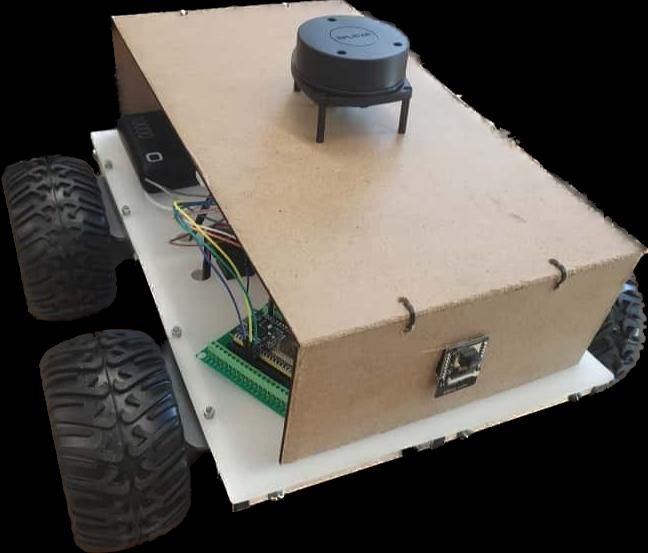
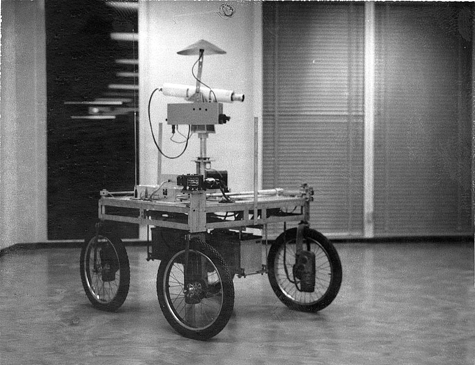
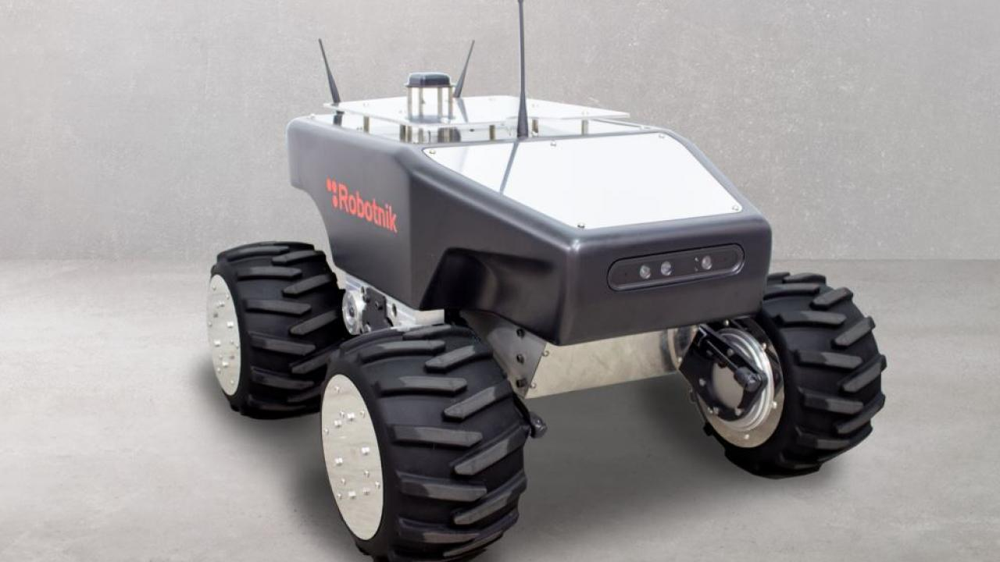
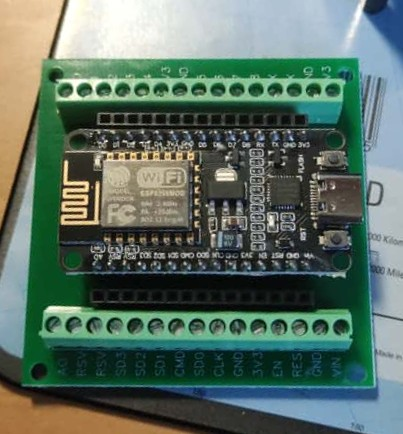
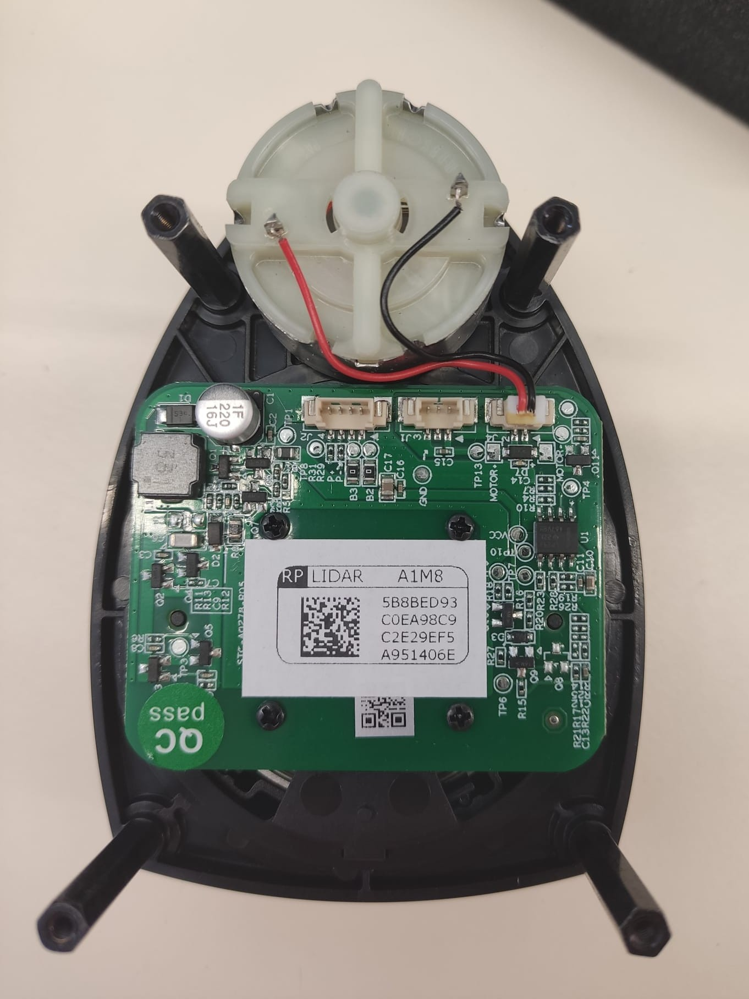
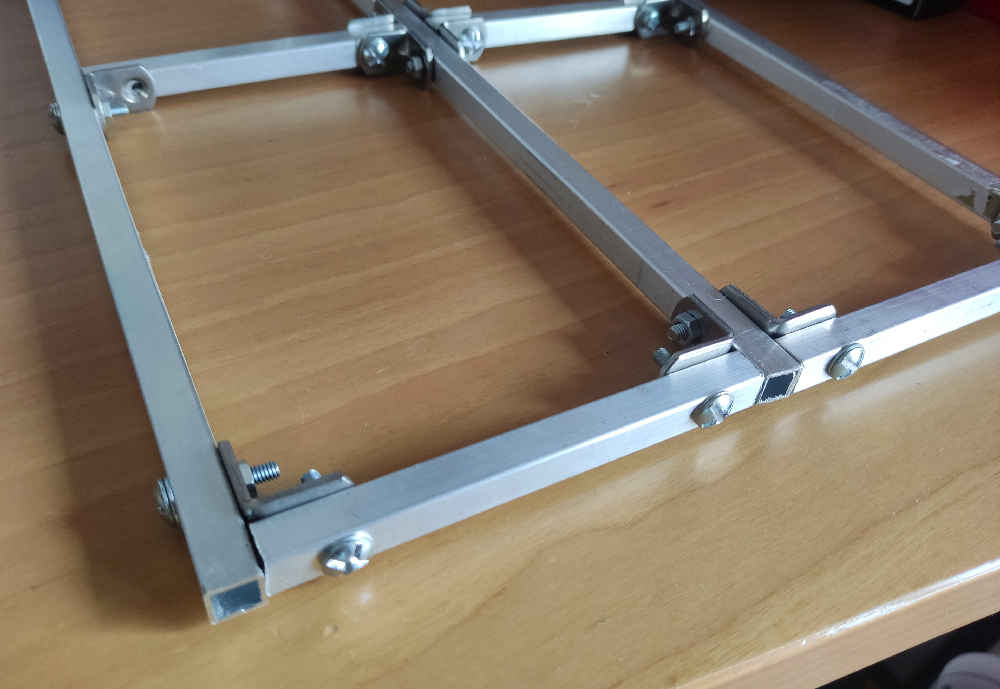
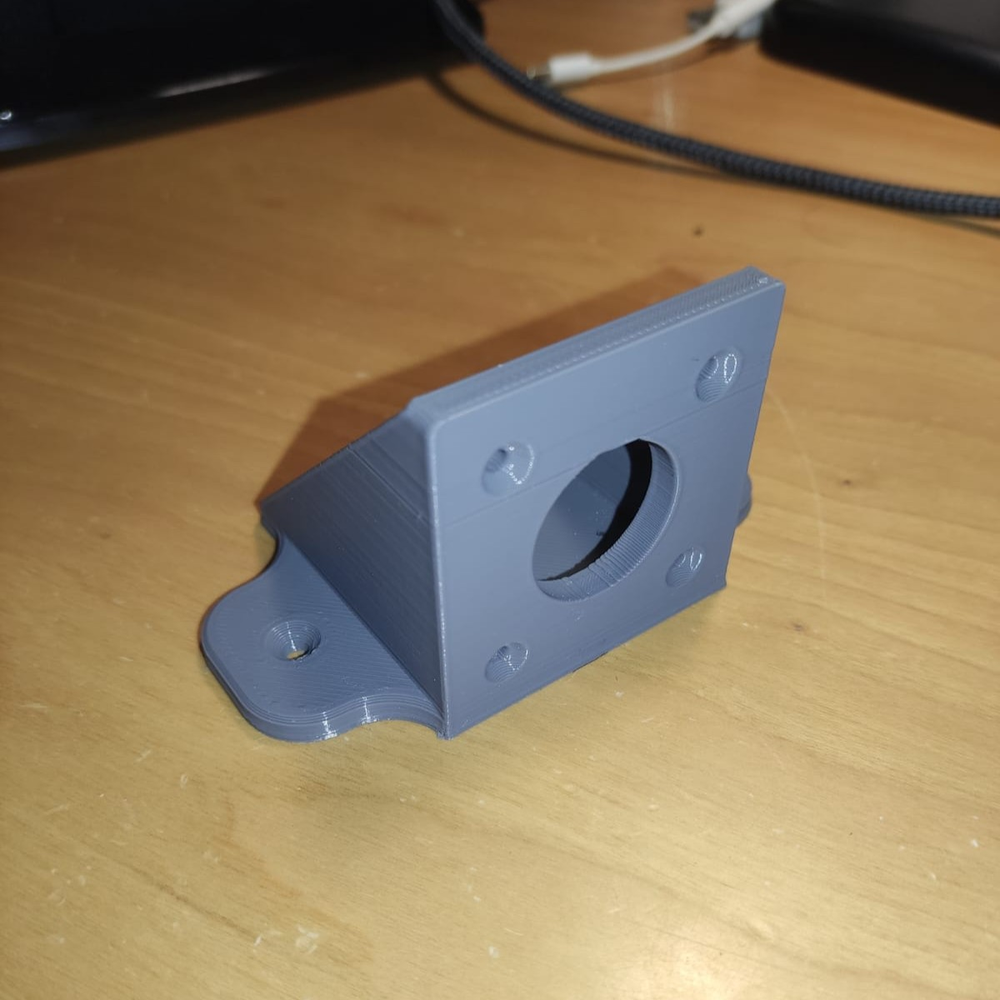
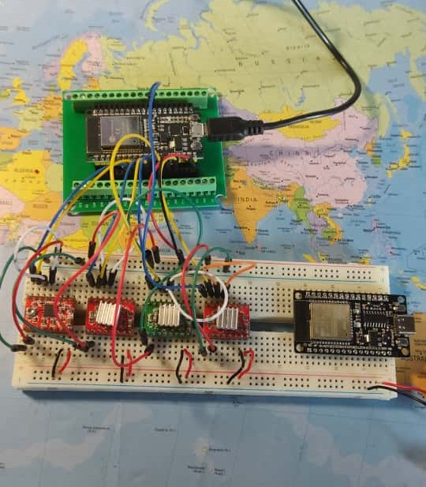
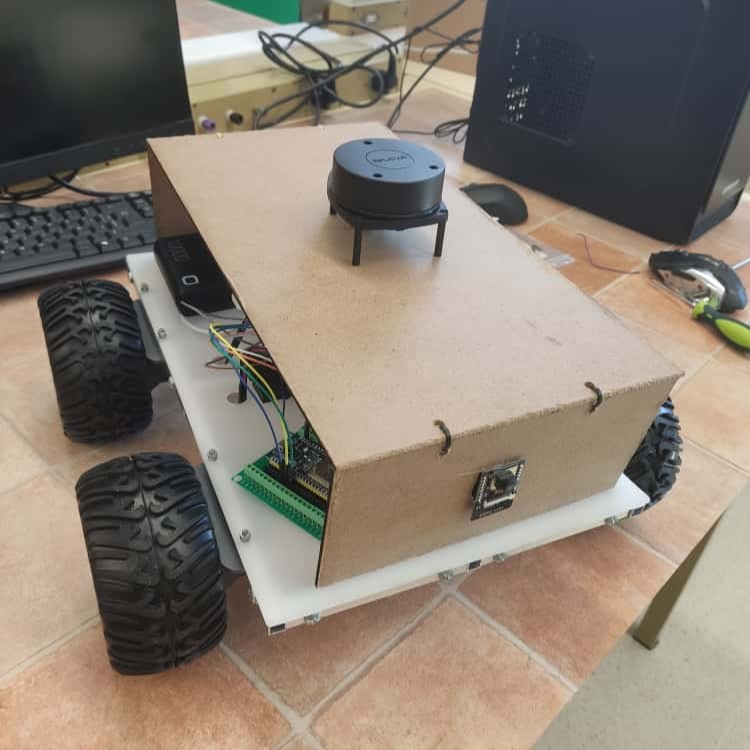

Development of a Low-Cost, Multifunctional Autonomous Robot
An autonomous mobile robot for indoor navigation and mapping, built from scratch for roughly $300 in components.

Overview
This project focuses on the design and development of a low-cost, multifunctional autonomous mobile robot for indoor navigation and mapping. The goal was to create an accessible robotics prototype that combines affordability with robust functionality, making advanced robotics technology more accessible for research and educational purposes. The robot integrates various sensors and actuators to achieve autonomous navigation, obstacle avoidance, and environmental mapping capabilities while maintaining cost-efficiency throughout the design and implementation process.
Study of State of the Art
The initial phase involved a deep study of autonomous mobile robots, tracing their evolution from their origins to the most advanced AMRs available nowadays. This comprehensive research analyzed the technological progression, from early pioneering systems to modern commercial solutions, to understand current capabilities, limitations, and opportunities for innovation in low-cost robotics platforms.


Design Phase
Based on the research findings, the robot architecture was conceptualized with modularity and cost-effectiveness as primary objectives. Multiple sketches were drawn to explore different mechanical structures, evaluating various configurations for optimal stability, accessibility, and component integration.


Component Selection
Components were carefully selected prioritizing low budget without compromising functionality. For localization tasks, the RPLidar A1M8 and GPS NEO-M8N modules were chosen for their accuracy and affordability. NEMA17 DC stepper motors were selected for their high torque and precision, controlled by A4988 drivers for reliable performance. The chassis structure utilized aluminum tubes for lightweight durability. ESP32 microcontrollers were selected for their exceptional price-to-performance ratio and integrated low-energy Bluetooth and WiFi modules, enabling seamless inter-device communication while maintaining cost-effectiveness. The overall cost of all components was approximately $300, demonstrating the project's success in achieving sufficient functionality at a fraction of commercial robot costs.


Testing
Individual components and subsystems underwent multiple tests to validate functionality and performance. Sensor accuracy, motor control responsiveness, and communication protocols were verified before integration to ensure reliable operation in the final assembly. Select a clip to watch it with the full description.
Assembly
The mechanical structure was assembled and all electronic components were integrated following a clean setup that would facilitate wiring and ensure maximum robustness once fully assembled. Wiring, PCB mounting, and sensor positioning were completed with attention to accessibility for future modifications and maintenance. A custom mount for the motors was designed in SolidWorks and 3D printed to ensure precise fitment and secure integration with the aluminum chassis structure.






Final Result
The completed low cost autonomous robot successfully demonstrates sufficient indoor navigation, obstacle detection and mapping capabilities at a fraction of the cost of commercial alternatives. The platform has proven to be suitable for educational purposes and potentially, research applications, validating the concept that advanced robotics functionality can be achieved through careful design optimization and component selection.